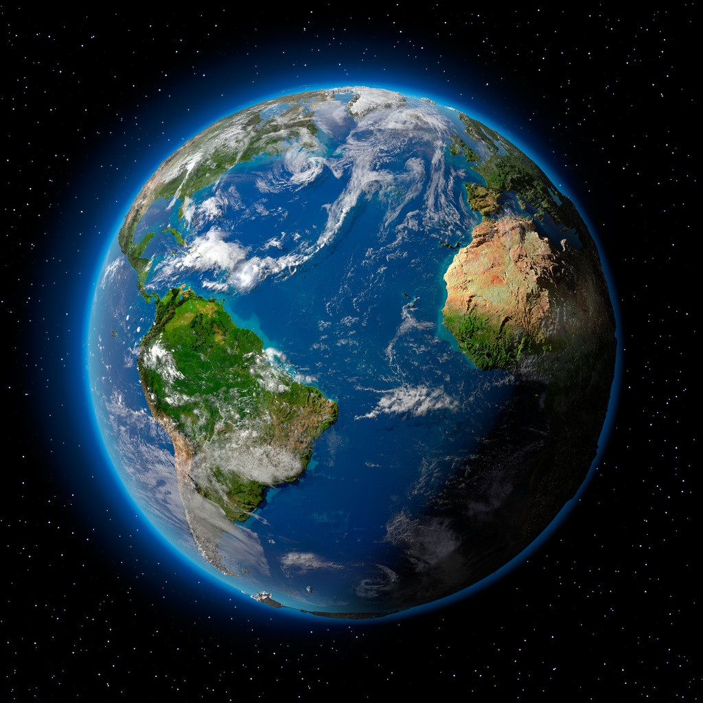

世界矿物资源简介：目前，世界除建材矿产外，元素周期表中可提取和利用的元素已达85 种以上，工业上利用的矿物已占已知3000 多种矿物的15 ％ 以上，其中非金属矿产品的品种、数量的增长和用途的扩大尤其引人注目，已从本世纪初的60 种增加到目前的300 多种，包括200 多种非金属矿物和50 多种岩石。 世界矿产的储量分布仍然很不平衡，许多矿产的大部分勘探储量仍集中在少数国家，但与80 年代相比，集中程度有所减弱。
有12 种矿产一半以上的储量集中在工业国家。但在西方工业国家中，80 ％以上的主要金属和非金属矿产的储量仍主要分布在美国、加拿大、澳大利亚和南非4 个国家中。有13 种矿产（石油、天然气、铝土矿、镍、钻、菱镁矿、锡、锑、锂、铌、钽、磷酸盐岩和石墨） 的储量一半以上分布在发展中国家
大气层简介：大气层(atmosphere)又叫大气圈，地球就被这一层很厚的大气层包围着。大气层的成分主要有氮气，占78．1%；氧气占20．9%；氩气占0．93%；还有少量的二氧化碳、稀有气体（氦气、氖气、氩气、氪气、氙气、氡气）和水蒸气。大气层的空气密度随高度而减小，越高空气越稀薄。大气层的厚度大约在1000千米以上，但没有明显的界限。整个大气层随高度不同表现出不同的特点，分为对流层、平流层、中间层、暖层和散逸层，再上面就是星际空间了。
人类的活动使地球大气圈中CO2含量明显增加，每年通过煤和石油的燃烧产生的CO2总量为6.2×10^9吨，相当于现今大气圈中CO2含量的1/250。温室效应的增长，臭氧层的破坏，一系列环境生态的恶化，对人类的生存环境提出了严重的挑战。“全球变化──地圈和生物圈十年”计划已成为当代科学研究的焦点，全世界的科学家将为人类生存环境的演化和预测提出科学对策。
世界森林资源简介：森林资源是林地及其所生长的森林有机体的总称。这里以林木资源为主，还包括林中和林下植物、野生动物、土壤微生物及其他自然环境因子等资源。林地包括乔木林地、疏林地、灌木林地、林中空地、采伐迹地、火烧迹地、苗圃地和国家规划宜林地。联合国环境规划署报告称，有史以来全球森林已减少了一半，主要原因是人类活动。根据联合国粮农组织2001年的报告，全球森林从1990年的39.6亿公顷下降到2000年的38.亿公顷。
在2011年国际森林年的背景下，联合国粮农组织日前发表了报告指出，由于亚洲森林面积的恢复，世界范围内的森林退化现象有所减轻。这份报告指出，中国、越南、菲律宾和印度森林面积的增加，弥补了非洲和拉美森林面积的减少。告特别强调了中国和澳大利亚所做的贡献几乎占到总量的一半。当然，数量并不等于质量，世界上生态系统的生物多样性仍然面临很大威胁，排在前四位的都是亚洲地区的森林。
地球水资源简介：水是地球上最丰富的一种化合物。全球约有四分之三的面积覆盖着水，地球上的水总体积约有13亿8600万立方千米，其中96.5%分布在海洋，淡水只有3500立方千米左右。若扣除无法取用的冰川和高山顶上的冰冠，以及分布在盐碱湖和内海的水量，陆地上淡水湖和河流的水量不到地球总水量的 1% 。降落到地上的雨、雪水，2 / 3 左右为植物蒸腾和地面蒸发所消耗。
随着经济的不断发展，人们对淡水的需求不断增加，2025年，淡水资源紧缺将成为世界各国普遍面临的严峻问题。地球虽然有70．8%的面积为水所覆盖，但淡水资源却极其有限。在全部水资源中，97．5%是咸水，无法饮用。在余下的2．5%的淡水中，有87%是人类难以利用的两极冰盖、高山冰川和永冻地带的冰雪。人类真正能够利用的仅占地球总水量的0．26%，而且分布不均。